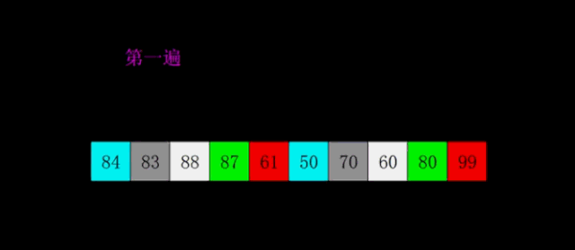
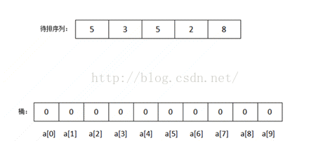

排序算法
辽宁师范大学 • 张大为@https://daweizh.github.io/noip/
除主函数外，本例中每个函数一个对应名字的.h文件，在主函数使用前用#include ""引入。当然，也可以把函数体直接在main前声明而不采取#incldue的方法。
- 主函数
#include <iostream> #include <cstring> #include <algorithm> #include "print.h" #include "selection.h" #include "bubble.h" #include "bubble2.h" #include "insertion.h" #include "bucket.h" #include "quick.h" #include "shell.h" #include "merge.h" #include "heap.h" #include "radix.h" #include "counting.h" #include "cocktail.h" using namespace std; int main() { int a[] = {39,6,1,8,20,40,4,4,42,18,50}; int len = sizeof(a)/sizeof(int); int b[len]; printf("00.%20s ","Initial Data:"); print(a,len); printf("01.%20s ","Selection Sort:"); memcpy(b,a,sizeof(a)); selection(b,len); print(b,len); printf("02.%20s ","Bubble Sort:"); memcpy(b,a,sizeof(a)); bubble(b,len); print(b,len); printf("03.%20s ","Bubble2 Sort:"); memcpy(b,a,sizeof(a)); bubble2(b,len); print(b,len); printf("04.%20s ","Insertion Sort:"); memcpy(b,a,sizeof(a)); insertion(b,len); print(b,len); printf("05.%20s ","Bucket Sort:"); memcpy(b,a,sizeof(a)); bucket(b,len,100); print(b,len); printf("06.%20s ","Quick Sort:"); memcpy(b,a,sizeof(a)); quick(b,0,len-1); print(b,len); printf("07.%20s ","Shell Sort:"); memcpy(b,a,sizeof(a)); shell(b,len); print(b,len); printf("08.%20s ","Merge Sort:"); memcpy(b,a,sizeof(a)); int r[len]; merge(b,r,0,len-1); print(b,len); printf("09.%20s ","Heap Sort:"); memcpy(b,a,sizeof(a)); heap(b,len); print(b,len); printf("10.%20s ","Radix Sort:"); memcpy(b,a,sizeof(a)); radix(b,len); print(b,len); printf("11.%20s ","Counting Sort:"); memcpy(b,a,sizeof(a)); counting(b,len); print(b,len); printf("12.%20s ","Cocktail Sort:"); memcpy(b,a,sizeof(a)); cocktail(b,len); print(b,len); return 0; }
- print函数
void print(int a[],int length){ printf("%d",a[0]); for(int i=1;i<length;i++) printf(",%d",a[i]); printf("\n"); }
1. 冒泡排序 (Bubble Sort)

void bubble(int a[],int length){ for(int i=length-1;i>=1;i--){ //n-1轮冒泡，n-1,n-2,...,1 for(int j=0;j<i;j++){ //冒泡的次数0,1,...,i-1 if(a[j]>a[j+1]){ //如果前面的大于后面的交换(从小到大) int tmp = a[j]; a[j] = a[j+1]; a[j+1] = tmp; } } } }
改进的冒泡排序：
void bubble2(int a[],int length){ bool ok; for(int i=length-2;i>=0;i--){ ok = true; for(int j=0;j<=i;j++){ if(a[j]>a[j+1]){ int tmp = a[j]; a[j]=a[j+1]; a[j+1]=tmp; ok=false; } } if(ok) break; } }
2. 选择排序 (Selection Sort)

void selection(int a[],int length){ for(int i=0;i<length;i++){ //找位置 int k=i; for(int j=i+1;j<length;j++){ //找包括i在内的最小的 if(a[j]<a[k]) k = j; } if(k!=i){ //把找到的最小的交换到i位置 int temp = a[i]; a[i] = a[k]; a[k] = temp; } } }
3. 插入排序 (Insertion Sort)
void insertion(int a[],int length){ int j,k; for(int i=0;i<length;i++){ for(j=i-1;j>=0;j--) if(a[j]<a[i]) break; if(j!=i-1){ int temp=a[i]; for(k=i-1;k>j;k--) a[k+1] = a[k]; a[k+1] = temp; } } }
4. 希尔排序 (Shell Sort)

shell排序实际上是一种直接插入排序推广，其基本原理为其先将一组数分成若干组；此处应该注意，分组的方式不能几个几个紧挨着分组，而是采用每次所分组数均为素数且最后一次分组为1的方法。采用分组的好处是，在每次排序完后都是将小的数尽量往前面赶，大的数尽量往后面赶，最后一次排序直接采用直接插入排序。运用到了直接插入排序越有序有快的特性。
例如12、5、9、34、6、8、33、56、89、0、7、4、22、55、77的排序步骤如下：
void shell(int a[],int length){ int drr[] = {5,3,1}; int lend = sizeof(drr)/sizeof(drr[0]); for(int i=0;i<lend;i++){ int gap = drr[i]; for(int j = gap;j<length;j++){ int temp = a[j]; int k = 0; for(k = j-gap;k >= 0;k-=gap){ if(a[k] > temp) a[k+gap] = a[k]; else break; } a[k+gap] = temp; } } }
5. 快速排序 (Quick Sort)

void quick(int a[],int left,int right){ int mid,l=left,r=right,temp; mid = a[(l+r)/2]; do{ while(a[l]<mid) l++; //在左半部找比mid大的数 while(a[r]>mid) r--; //在右半部找比mid小的数 if(l<=r){ temp = a[l]; a[l] = a[r]; a[r] = temp; l++; r--; } }while(l<=r); if(left<r) quick(a,left,r); if(l<right) quick(a,l,right); }
6. 并归排序 (Merge Sort)
void merge(int a[],int r[],int left,int right){ if(left==right) return ; int mid=(left+right)/2; merge(a,r,left,mid); merge(a,r,mid+1,right); int i=left,j=mid+1,k=left; while(i<=mid && j<=right){ if(a[i]<=a[j]){ r[k]=a[i]; k++; i++; }else{ r[k]=a[j]; k++; j++; } } while(i<=mid){ r[k]=a[i]; k++; i++; } while(j<=right){ r[k]=a[j]; k++; j++; } for(i=left;i<=right;i++) a[i] = r[i]; }
7. 堆排序 (Heap Sort)


void adjust(int a[],int start,int end){ int dad = start; //父节点指针 int son = dad * 2 + 1; //子节点指针 while(son<=end){ if(son+1<=end && a[son]<a[son+1]) son++; //比较两个子节点大小，选择小的 if(a[dad]>a[son]) return ; //父节点比子节点小，调整完成 else{ int temp = a[dad]; a[dad]=a[son]; a[son]=temp; dad=son; son = dad *2+1; } } } void heap(int a[],int length){ for(int i=length/2-1;i>=0;i--) //初始化顶堆 adjust(a,i,length-1); for(int i=length-1;i>0;i--){ int temp=a[0]; a[0]=a[i]; a[i]=temp; adjust(a,0,i-1); //调整堆顶 } }
8. 计数排序 (Counting Sort)

void counting(int a[],int length){ int maxn=-1; for(int i=0;i<length;i++){ if(a[i]>maxn) maxn = a[i]; } int c[maxn+10],ranked[maxn+10]; memset(c,0,sizeof(c)); memset(ranked,0,sizeof(ranked)); for(int i=0;i<length;i++) c[a[i]]++; for(int i=1;i<=maxn;i++) c[i] = c[i] + c[i-1]; for(int i=length-1;i>=0;i--) ranked[--c[a[i]]] = a[i]; for(int i=0;i<length;i++) a[i] = ranked[i]; }
9. 桶排序 (Bucket Sort)

void bucket(int a[],int length,int maxn){ int b[maxn+1]; memset(b,0,sizeof(b)); for(int i=0;i<length;i++) b[a[i]]++; int p=0; for(int i=0;i<=maxn;i++) while(b[i]>0){ a[p++] = i; b[i] --; } }
10. 基数排序 (Radix Sort)

int findMaxNum(int a[],int n){ int maxn = 0; for(int i=0;i<n;i++) if(a[i]>maxn) maxn = a[i]; return maxn; } int getLoopTimes(int n){ int count = 1; int temp = n/10; while(temp!=0){ count ++; temp =temp / 10; } return count; } void radixSort(int a[],int n,int p){ int buckets[10][n]; memset(buckets,0xf0f0f0f0,sizeof(buckets)); int div = 1; for(int i=1;i<p;i++) div = div * 10; for(int i=0;i<n;i++){ int row = (a[i]/div)%10; for(int j=0;j<n;j++){ if(buckets[row][j]==0xf0f0f0f0){ buckets[row][j]=a[i]; break; } } } int k=0; for(int i=0;i<10;i++){ for(int j=0;j<n;j++){ if(buckets[i][j]!=0xf0f0f0f0){ a[k]=buckets[i][j]; buckets[i][j]=0xf0f0f0f0; k++; }else{ break; } } } } void radix(int a[],int length){ int maxNum = findMaxNum(a,length); int maxLoop = getLoopTimes(maxNum); for(int i=1;i<=maxLoop;i++){ radixSort(a,length,i); } }
11. 特别的冒泡排序——鸡尾酒排序 (Cocktail Sort)

void cocktail(int a[],int length){ int bottom =0,top = length-1,bound=0,temp; bool swapped = true; while(swapped){ swapped = false; for(int i=bottom;i<top;i++){ //由底向上冒 if(a[i]>a[i+1]){ temp = a[i]; a[i]=a[i+1]; a[i+1]=temp; swapped = true; bound = i; } } top = bound; for(int i=top;i>bottom;i--){ if(a[i]<a[i-1]){ temp = a[i]; a[i]=a[i-1]; a[i-1]=temp; swapped = true; bound = i; } } bottom = bound; } }
12. 排序算法比较
- O(n²)的排序算法
- 冒泡排序
- 选择排序
- 插入排序
- 希尔排序
- O(n log n) 的排序算法
- 并归排序
- 快速排序
- 堆排序
- 线性的排序算法
- 计数排序
- 桶排序
- 基数排序